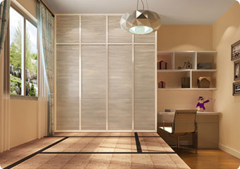
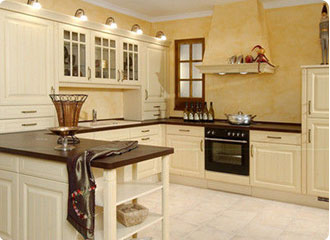

分享提问
小户型空间总是不够用，通常衣柜就占据着卧室较大一部分面积，卧室衣柜布局合不合理直接影响着卧室的空间便利与否。小户型衣柜要如何设计？
4月15日 15:30 (19) (24)
隐形门，是装修创意中比较受欢迎的一种。隐形门的设计体现了设计者的创意，隐形门的做法与施工，你有了解过吗？家装中使用隐形门，有什么优缺点？
4月10日 11:10 (19) (24)
阳台在装修的时候一般都会安装推拉门，主要用来抵挡风雨、隔绝噪音。那在选购时阳台推拉门的选购技巧有哪些呢？
4月8日 09:10 (19) (24)

